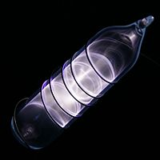

Numero atomico: 36
Massa atomica: 83,80
Temperatura di fusione (°C): -157
Temperatura di ebolizione (°C): -152
Energia di prima ionizzazione (kj/mol): 1351
Elettronegatività (secondo Pauling): 3,00
Densità: 3,75
Numeri di ossidazione: --
Configurazione elettronica: 1s2, 2s2, 2p6, 3s2, 3p6, 3d10, 4s2, 4p6
Maggiori Informazioni